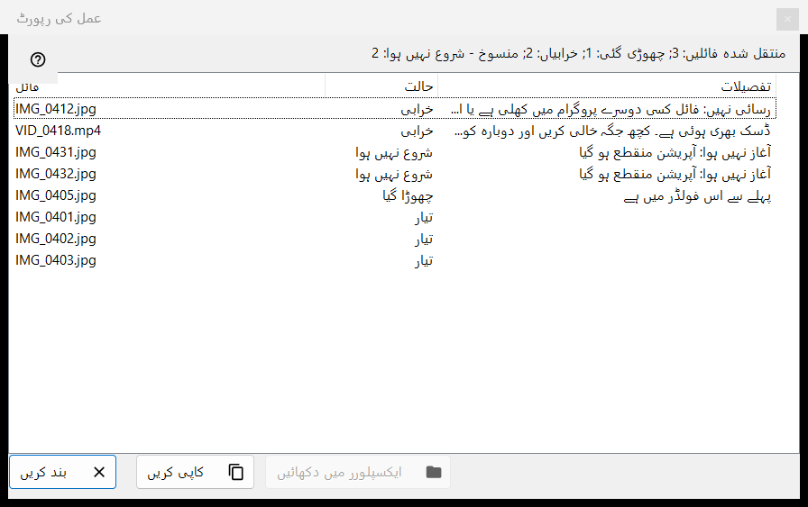
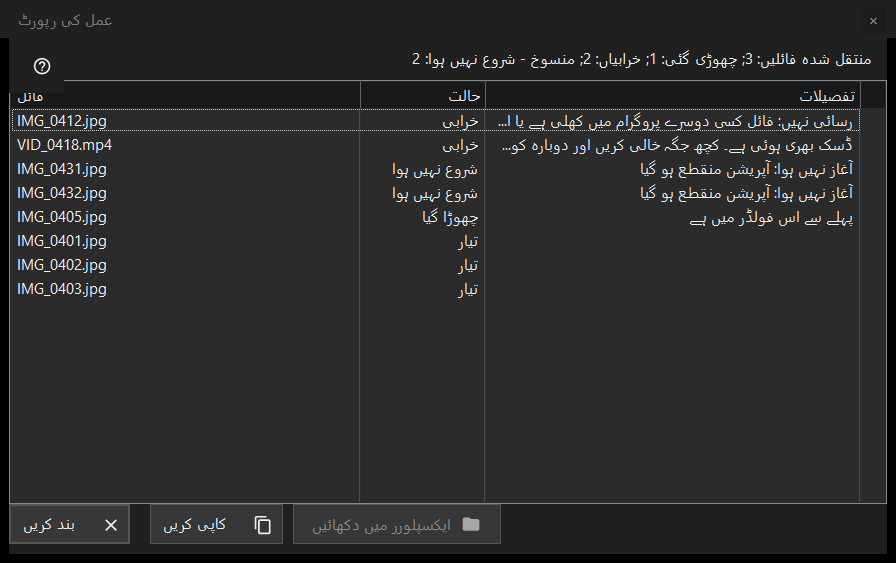

عمل کی رپورٹ
یہ کس مقصد کے لیے ہے
آخری بیچ آپریشن (منتقلی، کاپی، حذف یا بحالی) میں ہر فائل کے ساتھ کیا ہوا اور کچھ فائلیں کیوں چھوڑی گئیں یا ناکام ہوئیں، اس کی فہرست دیتی ہے۔ یہ کبھی خود نہیں کھلتی: چلانے کے بعد تھمب نیل پینل (F3) کے نیچے رپورٹ کی لائن پر کلک کریں۔ اگر رن صاف نہ ہو تو لائن تفصیل دیکھنے کے لیے کلک کریں پر ختم ہوتی ہے۔


اس ترتیب میں
- تھمب نیل پینل میں کئی فائلوں پر ایک آپریشن چلائیں۔
- پینل کے نیچے خلاصے کی لائن پڑھیں۔
- یہ ونڈو کھولنے کے لیے لائن پر کلک کریں۔
- فہرست کا اوپری حصہ دیکھیں: ناکامیاں پہلے آتی ہیں۔
- قطاریں منتخب کریں، پھر ان کے راستے لینے کے لیے کاپی کریں یا فائل تلاش کرنے کے لیے فائل ایکسپلورر میں دکھائیں استعمال کریں۔
عناصر
خلاصے کی لائن
لائن نتیجے سے شروع ہوتی ہے: منتقل شدہ فائلیں: 5؛ کاپی کی گئی فائلیں: 5؛ حذف شدہ فائلیں: 5؛ بحال شدہ فائلیں: 5 یا مکمل کارروائیاں: 5۔ اس کے بعد کے حصے، ہر ایک اپنی گنتی کے ساتھ، صرف تب آتے ہیں جب گنتی صفر نہ ہو: چھوڑی گئی؛ خرابیاں؛ واپس نہ ہونے والی کارروائیاں؛ مستقل طور پر حذف کر دیا گیا، بحال نہیں کیا جا سکتا؛ اور اگر رن جلدی رک جائے تو منقطع، فولڈر سے کوئی رابطہ نہیں - شروع نہیں ہوا (لگاتار تین ناکام کنکشن رن کو روک دیتے ہیں) یا منسوخ - شروع نہیں ہوا۔
فہرست
کالم: فائل، حالت اور تفصیلات۔ سب سے خراب قطاریں پہلے آتی ہیں: ناکام، پھر شروع نہ ہونے والی، پھر چھوڑی گئی، پھر مکمل؛ گروپ کے اندر فائلیں رن کی ترتیب رکھتی ہیں۔ قطار کا ٹول ٹپ پورا راستہ دکھاتا ہے۔ تفصیلات ناکامی کی سادہ وجہ دیتی ہیں اور مکمل فائل کے لیے منزل کا فولڈر دیتی ہیں۔ اگر پرانا نام پہلے سے لیا جا چکا ہو تو نیا نام لکھا جاتا ہے اور اس کے بعد یہ الفاظ ہوتے ہیں: کے طور پر محفوظ کیا گیا۔ جو حذف ریسائیکل بن کو چھوڑ کر ہوا ہو اس کے لیے یہ لکھا ہوتا ہے: مستقل حذف - واپسی دستیاب نہیں۔
حالتیں اور چھوڑنے کی وجوہات
حالتیں: تیار؛ خرابی؛ چھوڑا گیا؛ شروع نہیں ہوا۔ چھوڑی گئی فائل وجہ بتاتی ہے: پہلے سے اس فولڈر میں ہے؛ فائل اب ڈسک پر نہیں ہے؛ آرکائیو کے اندر فائلیں تبدیل نہیں ہوتیں؛ منتخب فائلوں میں ایک ہی نام پہلے سے موجود ہے؛ وسیلہ صرف پڑھنے کے لیے ہے؛ یہ وہی فائل ہے؛ یا منزل کے فولڈر میں نام پہلے سے استعمال میں ہے۔ جو فائل شروع نہیں ہوئی وہ بتاتی ہے: آغاز نہیں ہوا: آپریشن منقطع ہو گیا۔
ایکسپلورر میں دکھائیں، کاپی، بند کریں
فائل ایکسپلورر میں دکھائیں تب فعال ہوتا ہے جب ایک قطار منتخب ہو؛ یہ ایک فولڈر ونڈو کھولتا ہے جس میں منتخب پہلی فائل نمایاں ہوتی ہے، یا فائل ہٹ چکی ہو تو فولڈر۔ کاپی کریں (Ctrl+C سے بھی) منتخب قطاروں کے پورے راستے کلپ بورڈ پر رکھتا ہے، ہر لائن میں ایک، یا اگر کچھ منتخب نہ ہو تو تمام قطاروں کے: مسئلے والی فائلوں کی فہرست کسی کو دینے کا تیز طریقہ۔ بند کریں رپورٹ ختم کرتا ہے۔